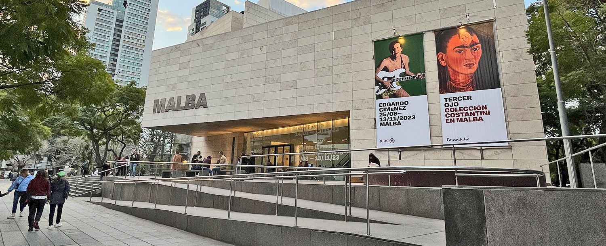
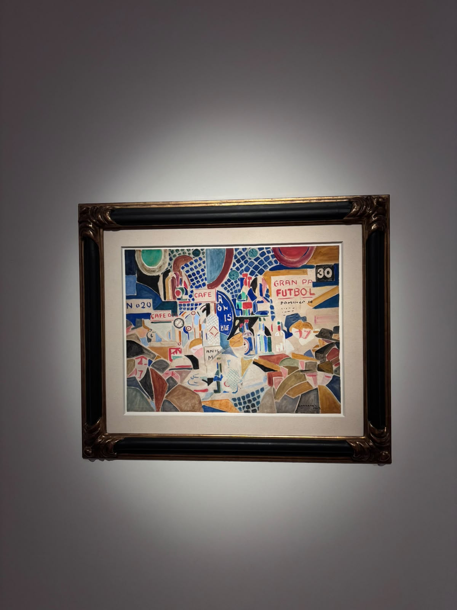

Un recorrido por el MALBA
El MALBA (Museo de Arte Latinoamericano de Buenos Aires) reúne una de las colecciones más importantes de arte moderno y contemporáneo de la región.
Elegí este museo como tema de mi galería porque me interesa capturar tanto su arquitectura como las obras que exhibe.
Esta futura galería mostrará imágenes de la fachada, el interior del edificio y algunas de las piezas que forman parte de su colección.

Sobre el proyecto
Esta galería visual es un proyecto enfocado en mi interes por el arte latinoamericano.
La idea es recorrer el MALBA con una mirada propia, retratando tanto su arquitectura como algunas de las obras que forman parte de su colección.
Por ahora esta es una primera propuesta armada como maqueta; en la próxima etapa voy a sacar y sumar mas fotos propias fotos del museo.

Ubicacion
Av. Figueroa Alcorta 3415
C1425CLA Buenos Aires, AR.
Sitio web del MALBA